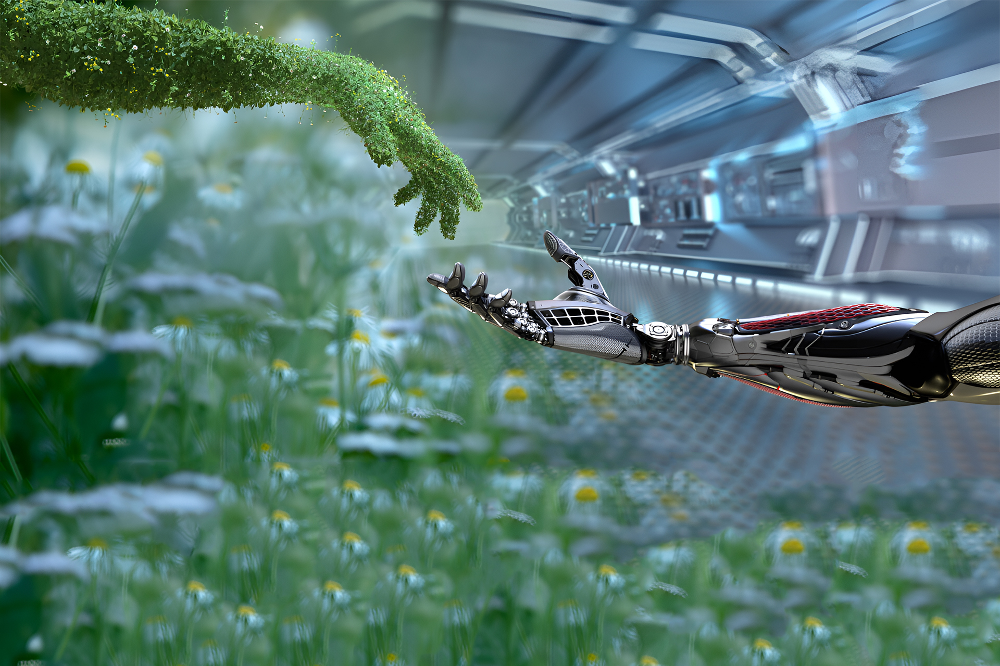

A revolução educacional na Finlândia começou nas escolas e universidades, onde o modelo de Economia Circular já é ensinado como chave para o futuro. A Finlândia pretende criar o mercado de Economia Circular mais funcional do mundo, investindo pesado em conscientização. Foi criada uma agência estatal chamada Sitra, que funciona como um fundo de investimento e uma incubadora para projetos sustentáveis.
A propósito, na Economia Circular, os produtos tradicionais são compartilhados como serviços, como no caso do Uber e das bicicletas de aplicativo, tecnologias que trazem compartilhamento de bens e desta forma diminuem o consumo.
Reciclagem na Finlandia
Em relação à reciclagem, a Finlândia é um exemplo a ser seguido. Enquanto no Brasil, por exemplo, só reciclamos entre 4 a 5% dos resíduos gerados. A Finlandia está chegando aos 50% da reutilização.
O país possui uma meta de reciclagem de 55% dos resíduos urbanos até 2025, 60% em 2030 e 65% em 2035. A taxa de reciclagem da Finlândia em 2016 foi de 42%, e o objetivo da Lei de Resíduos da Finlândia é prevenir a geração de lixo.
Outra iniciativa interessante na Finlândia é o arremesso de celulares para reciclagem, uma brincadeira que começou para conscientizar e incentivar as crianças a fazerem a reciclagem de eletrônicos. As crianças jogam os celulares para que sejam reciclados, aprendendo de forma lúdica sobre a importância da reciclagem.
Arremesso de Celular na Finlandia
As Tecnologias na Sustentabilidade
A tecnologia é uma das especialidades da nação Finlandesa, que conta com alta capacidade de produção e transmissão de energia limpa. Esse feito só foi possível através de um sistema de colaboração entre o setor público e as empresas estabelecidas no país.
A geração de energia é a espinha dorsal de qualquer país industrialmente desenvolvido, e a Finlândia sabe muito bem disso. Por isso, o país passou a investir em novas formas de geração de energia, com o objetivo de utilizar os recursos naturais disponíveis de forma consciente e sustentável.
A proposta ambiental da Finlândia enfoca a utilização de energia compartilhada, uma forma de reduzir o consumo e aumentar a eficiência energética, o que a torna uma revolução energética. Essa abordagem é importante para a construção de uma sociedade mais sustentável, que utiliza os recursos naturais de forma responsável e eficiente.

A Tecnologia com a Sustentabilidade na Finlanida